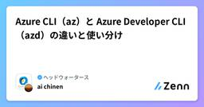
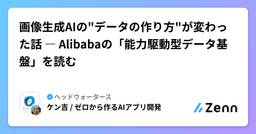
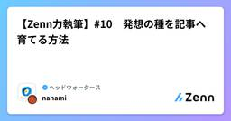
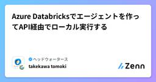
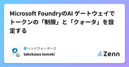
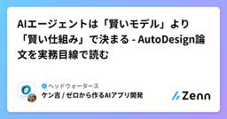
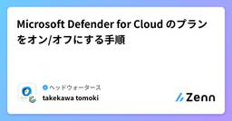

ヘッドウォータースのフィード
https://zenn.dev/p/headwaters
株式会社ヘッドウォータースのテックブログです。 AIエージェント、生成AI、Azure、GitHub Copilot、IoT、XR系などData&AIとApp modernizeに関して幅広く投稿します！
フィード

Entra Agent IDでAzureリソースに認証・アクセスする
ヘッドウォータースのフィード
Microsoft Foundry で発行される Entra Agent ID（エージェント専用のID）を使って、Azureリソース（Azure Blob Storage）に認証・アクセスできるかを検証しました。本記事では、その検証手順と結果をまとめます。 やることFoundry上にHosted Agent（Blobコンテナー一覧を取得するツールを持つエージェント）をデプロイし、以下の2点を確認します。ネガティブテスト: Agent IDにStorageのRBACロールを付与していない状態でBlobアクセスが拒否されることポジティブテスト: Agent IDに Stora...
17時間前

Azure CLI（az）と Azure Developer CLI（azd）の違いと使い分け
ヘッドウォータースのフィード
実務や検証を進めていく上で、Azureは結構コマンドラインから操作する事が多い(?)と感じたので、az（Azure CLI）と azd（Azure Developer CLI）について調査・学習しました！ 結論観点Azure CLI（az）Azure Developer CLI（azd）目的Azure リソースの作成・管理（リソース単位の操作）アプリケーションのプロビジョニングとデプロイの高速化（プロジェクト単位のワークフロー）抽象度低い（1 コマンド = 1 操作）高い（1 コマンドで IaC 実行〜デプロイまで）主な利用者インフラ管...
2日前

画像生成AIの"データの作り方"が変わった話 ― Alibabaの「能力駆動型データ基盤」を読む
ヘッドウォータースのフィード
はじめに「モデルのアーキテクチャを工夫する」よりも「学習データの作り方・与え方を工夫する」ほうが効くーーそう言われても、正直ピンとこない人が多いのではないでしょうか。今回紹介するのは、Alibaba GroupがarXivに投稿した論文 「From Corpora to Co-Evolving Capabilities: Capability-Centric Data Design for Generalist Image Generation」（arXiv:2608.18076）です。この論文がやっていることを一言でいうと、「タスクごとにデータセットを作る」のをやめて、「AI...
2日前

Azure - Azure AI Userが表示されない？
ヘッドウォータースのフィード
執筆日2026/8/31 はじめにMicrosoft Foundryのプロジェクトを触っていて、Azure ポータルの「アクセス制御 (IAM)」からロールを割り当てようとしたときのことです。Azure AI User を検索したのですが、候補に出てこない..なぜ？ 結論廃止されたわけではなく、表示名がリネームされていたというだけでした。 何がどう変わったのかFoundry 関連の RBAC ロールは、以下のように名前が変わりました。旧ロール名現在のロール名Azure AI UserFoundry UserAzure AI Owne...
2日前

【Zenn力執筆】#10 発想の種を記事へ育てる方法
ヘッドウォータースのフィード
はじめに大学時代、私は教職課程を履修していました。模擬授業を行う機会も多く、そのたびに授業づくりについて様々なことを学びました。その中でも今でも印象に残っている言葉があります。「授業の良さは導入で決まる。」当時、その言葉を口にした教授のことは正直あまり好きではありませんでした。しかし、模擬授業の回数を重ねるうちに、その言葉の意味を少しずつ理解するようになりました。どれだけ良い内容を用意していても、最初に興味を持ってもらえなければ最後まで聞いてもらえません。逆に、導入で興味を持ってもらえれば、その先の内容にも耳を傾けてもらえます。私は技術記事を書くようになった今で...
2日前

Azure Databricks - Entra ID の認証情報でAzure Databricks のエージェントを外部から実行する
ヘッドウォータースのフィード
執筆日2026/8/29 やりたいことAzure Databricks 上に構築したエージェントを、ローカル環境（外部アプリケーション）から Entra ID の認証情報を使って呼び出したい。このとき、エージェントを実行できるかどうかは 呼び出したユーザー自身の権限 で決まるようにしたい。つまり、Serving エンドポイントに対する権限を持つユーザーは実行でき、持たないユーザーは実行できない、という状態を作りたいなと。これを実現する手段として、Databricks の OAuth トークンフェデレーション（アカウント全体） を使います。Entra ID が発行した J...
4日前

Azure Databricksでエージェントを作ってAPI経由でローカル実行する
ヘッドウォータースのフィード
執筆日2026/8/28 やることAzure Databricksでエージェント作成してAPI経由で実行してみようかなと。 前提Azure Databricksをデプロイ済みであること 手順 エージェント用のドキュメントをカタログに登録カタログをクリックdefault配下にフォルダーを作成するフォルダーに以下のPDFをuploadするhttps://global-assets.irdirect.jp/pdf/tdnet/batch/140120260814521497.pdf エージェントを作成AI/ML>エージェントをク...
5日前

Microsoft FoundryのAI ゲートウェイでトークンの「制限」と「クォータ」を設定する
ヘッドウォータースのフィード
執筆日2026/8/27 やること同一サブスクリプション配下に Microsoft Foundry の Project がいくつかあります。各 Project でモデルのトークン制限をプロジェクトに設定しようかなと。 前提Azure API Management をデプロイしていることMicrosoft Foundry、Project をデプロイしていること 「制限」と「クォータ」の使い分けFoundry の AI ゲートウェイのトークン管理には「制限」と「クォータ」の 2 つのタブがあります。抑える対象が違うので、目的に応じて使い分けます。制限...
6日前

AIエージェントは「賢いモデル」より「賢い仕組み」で決まる - AutoDesign論文を実務目線で読む 1
1
ヘッドウォータースのフィード
はじめに「同じClaude CodeやGPT-5.5を使っているのに、なぜかあのチームのAIエージェントだけ成果物のクオリティが高い」そんな経験、ありませんか？2026年8月に公開された論文 「AutoDesign: Meta-Harness Optimization for Long-Horizon Agentic Design」（arXiv:2608.13560）は、この「差」の正体を構造的に説明してくれる論文です。一言でいうと、この論文が言っていることはこうです。モデルの性能を上げるのではなく、モデルの「周りの仕組み（ハーネス）」自体を自動で育てていけば、安いモデル...
8日前

Microsoft Defender for Cloud のプランをオン/オフにする手順
ヘッドウォータースのフィード
執筆日2026/8/25 はじめにAzure サブスクリプションで Microsoft Defender for Cloud の有料プランをとりあえず有効化したまま放置してしまい、想定外の課金が発生した経験がある方は多いのではないでしょうか。私はあります。Microsoft Defender for Cloud のプランをオン/オフにする手順をまとめようかなと。 手順Azure Portalを開くMicrosoft Defender for Cloud を開く左タブの管理>環境設定をクリック該当のサブスクリプションを選択するDefenderプ...
8日前

【在宅勤務の意外な敵】二酸化炭素濃度が集中力に及ぼす影響と換気の重要性について
ヘッドウォータースのフィード
部屋の二酸化炭素濃度を意識したことはありますか？私は最近まで、まったく意識したことがありませんでした。在宅勤務中、なぜか集中できない。午後になると頭がぼんやりする。これまでは、その原因を睡眠不足や運動不足、仕事へのモチベーションの問題だと思っていました。しかし、あるとき「部屋の二酸化炭素濃度が集中力に影響する」という情報を目にしました。在宅勤務では長時間同じ部屋で過ごします。もし換気するだけで少しでも集中しやすくなるなら、試してみる価値はありそうです。そこで、部屋の状態を確認するために、SwitchBotの「CO2センサー（温湿度計）」を購入しました。SwitchBo...
8日前
【Zenn力執筆】＃9 私の記事ネタはどこから生まれるのか
ヘッドウォータースのフィード
はじめに「ぜん」と読む言葉で、皆さんは何を思い浮かべますか？私は「全軍前進」です。天下の大将軍が仲間を鼓舞するような力強さを感じる言葉で、記事を書くときにも勇気をもらっています。Zennには日々多くの技術記事が投稿されています。私自身も、自社のマークが付いている記事や、普段執筆しているネットワーク関連の記事を中心によく読んでいます。たくさんの記事から学びを得られる一方で、以前から気になっていたことがあります。「執筆者の皆さんは、普段どこから記事ネタを見つけているのだろう？」また、この記事にはもう一つ目的があります。それは、2026年8月末時点における私の記事ネタの発...
8日前
Fabric Warehouse の queryinsights でクエリを監視&分析する
ヘッドウォータースのフィード
1. Fabric Warehouse における監視の手段データプラットフォームでウェアハウスの使用状況を監視できることは重要命題です。Microsoft FabricのWarehouseでは、このクエリのパフォーマンスや実行状況を把握する手段として、主に以下の4つが提供されています。https://learn.microsoft.com/ja-jp/fabric/data-warehouse/monitoring-overview手段概要主な利用シーンFabric Capacity Metricsアプリ各Warehouseの容量使用状況を可視化。ユーザ...
8日前
Azure API Management - On-Behalf-Of フローを組み、AI Search をユーザー権限で検索する
ヘッドウォータースのフィード
執筆日2026/8/24 やることAzure API Management（APIM）を経由して、サインインしたユーザー本人の権限で Azure AI Searchを検索する仕組みを構築しようかなと。APIMをOAuth 2.0 の On-Behalf-Of（OBO）フローにおける中間層 Web APIとして組み込み、クライアントから受け取ったユーザートークン（Token A）を、Entra IDでAI Search 用トークン（Token B）に交換してからバックエンドへ転送する。これにより、AI Search 側では「APIM の権限」ではなく「ユーザー本人の権限」で...
9日前
Azure Content Understanding の Agentic モード（プレビュー）を試してみた
ヘッドウォータースのフィード
執筆日2026/8/23 はじめにAzure Content Understandingは、ドキュメント・画像・音声・動画といった非構造データを、スキーマに沿った構造化データに変換してくれる Foundry Toolsのサービスです。2026年8月のアップデートでCU 2.0のパブリックプレビュー（API バージョン 2026-06-01-preview）が公開され、そこに Agentic モード が追加されました。Agentic モードは、ひとことで言うと「1回の抽出パスでは答えが出ない書類のための、反復的な推論つき抽出」です。値がドキュメント中の1か所に書かれていない...
10日前
AppService Plan - Basicへのダウングレードができない場合に確認する点
ヘッドウォータースのフィード
執筆日2026/8/22 発生した事象App Service Plan上に pp Service / Functionsをデプロイしています。SKUはP0v3(Premium v3)で運用していましたが、コストを下げるために Basic へスケールダウンしようとしたところ、以下のエラーが発生しました。App Service プランを更新していますCannot use the SKU Basic with File Change Audit for site <サイト名>. See https://aka.ms/supported-log-types for ...
11日前
【FastAPI × PostgreSQL】AlembicでDBマイグレーションを実施する
ヘッドウォータースのフィード
AlembicとはAlembic は SQLAlchemy 公式のマイグレーション管理ツールです。モデル変更内容をマイグレーションファイルとして管理し、DBスキーマ変更履歴をソースコードで管理できます。本記事ではPostgreSQLのデータベース作成から、Alembicを用いたマイグレーション実行およびDB反映確認までの流れを説明します。 本記事で作成する構成 テーブルtables├─ alembic_version├─ teams└─ usersusers.team_id └─ teams.id(FK) ディレクトリbackend/├─ .venv...
12日前
【Zenn力執筆】＃8 インターネット界の「どこでもドア」と言えば・・・？
ヘッドウォータースのフィード
はじめに突然ですが、ドラえもんのひみつ道具で一番好きなものは何ですか？「スペアポケット」と答えた方とは気が合いそうです笑もちろんどのひみつ道具も魅力的ですが、多くの人が真っ先に思い浮かべるのは「どこでもドア」ではないでしょうか。ドアを開くだけで目的地へ移動できるどこでもドアが実在したら、通勤や旅行の概念は大きく変わるかもしれません。そんなことを考えていたとき、ふとVPNという技術が頭に浮かびました。私はVPNに対して、在宅勤務のときに会社へ接続するための技術というイメージを持っていました。実際、自宅にいながら会社のシステムへアクセスできる様子は、どこでもドアで...
12日前
エンジニアは実験しよう ～その技術選定、本当に正しいですか？『なんとなく良い』を卒業するためのブログ
ヘッドウォータースのフィード
はじめにここでの主張は、エンジニアも（エンジニアじゃない人も）実験してみることを勧めるというものです。なぜ実験を勧めるのかというと、実験→評価→改善→実験と繰り返していくことで技術的な向上とともに思考する力を持ってほしいからです。開発の際には技術選定を行います。クラウドかオンプレミスか、どの言語のどのツールのバージョンか、どのDBでどう保存するか。AIならどのモデルを使うか、そのプロンプトは？と、様々な選択があって決める必要があります。でもそれは本当に正しい選択ですか？なんとなく決めていませんか？おすすめは大規模な研究ではなく、小さなところから実験を始めることです。なぜ...
12日前
Azure Application insights - ログ保存の日時上限を設定する
ヘッドウォータースのフィード
執筆日2026/8/21 やることAzure Application Insightsを使ってログを収集していますが、コストが嵩んできました。Application Insightsには1日あたりに取り込むデータ量の上限（日次上限、Daily Cap）を設定する機能があるため、今回はその設定をしていきます。 Application Insightsのコストの考え方についてApplication Insightsの料金は、基本的に収集したテレメトリデータの量（GB） に応じて課金される従量課金制です。ログ、メトリック、トレース、依存関係呼び出し、例外情報など、SDKやAz...
12日前